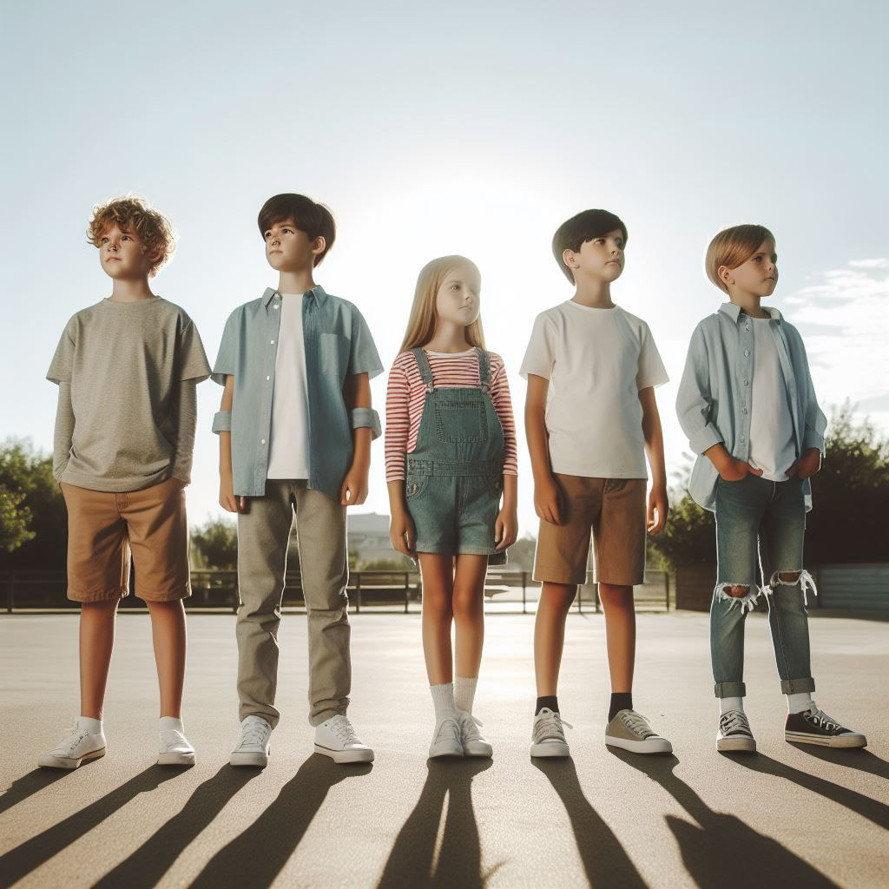

KidsCare is currently working on expanding the reach of our "Bright Minds Academy, an educational initiative aimed at providing quality early childhood education to ensure that every child has access to a safe and stimulating learning environment.

In collaboration with healthcare professionals and community partners, KidsCare is implementing the "Healthy Kids, Happy Futures" project to promote the physical and mental well-being of children.
KidsCare led a successful campaign to revitalize local playgrounds, creating safe and inclusive spaces for children to play and explore. Through community volunteers and corporate partnerships, we renovated playground equipment, installed safety features.

KidsCare facilitated creative arts workshops and events, providing children with opportunities to explore their creativity and express themselves through art, music, and drama. Through these projects, children developed confidence.
KidsCare established community gardens in partnership with local schools and organizations, teaching children about gardening, nutrition, and environmental sustainability. Through hands-on learning experiences, children cultivated fruits and vegetables, learned about healthy eating habits.